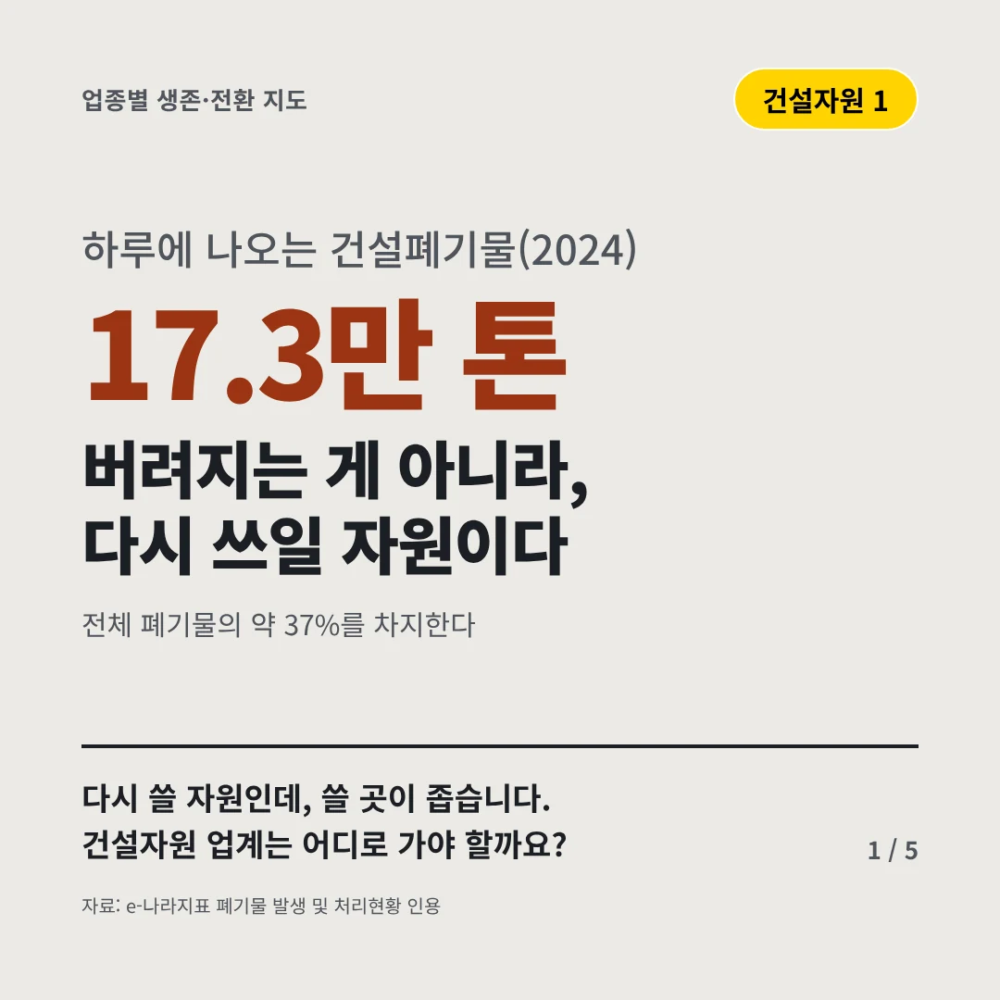
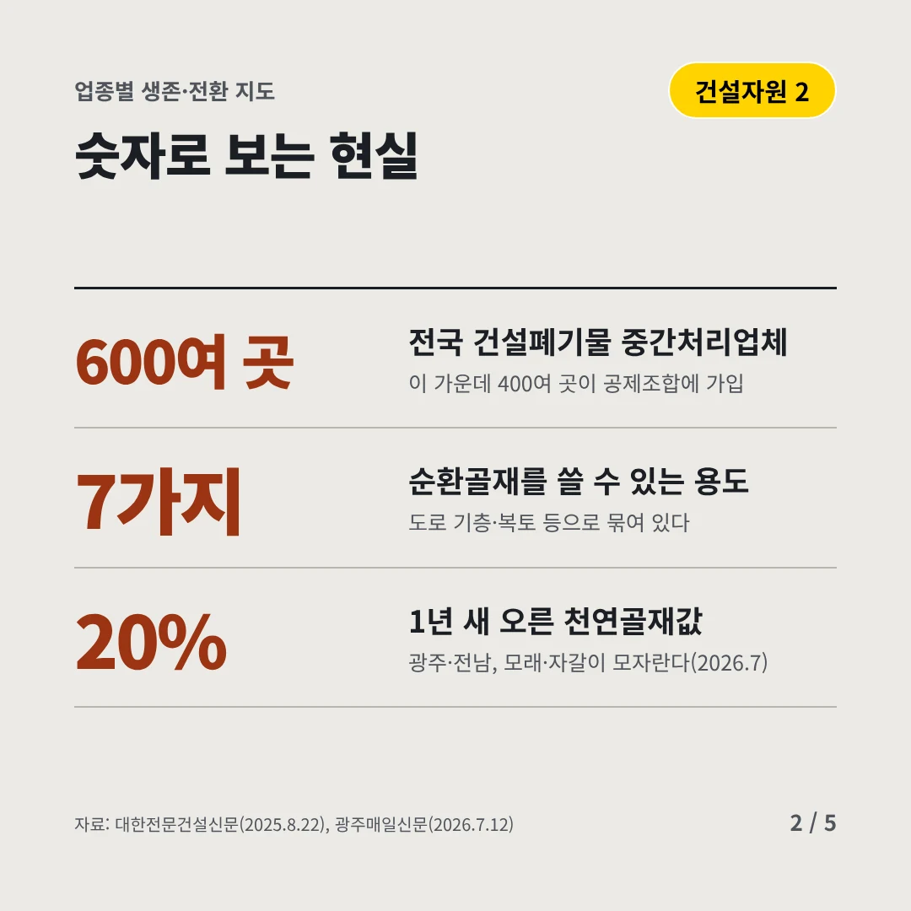
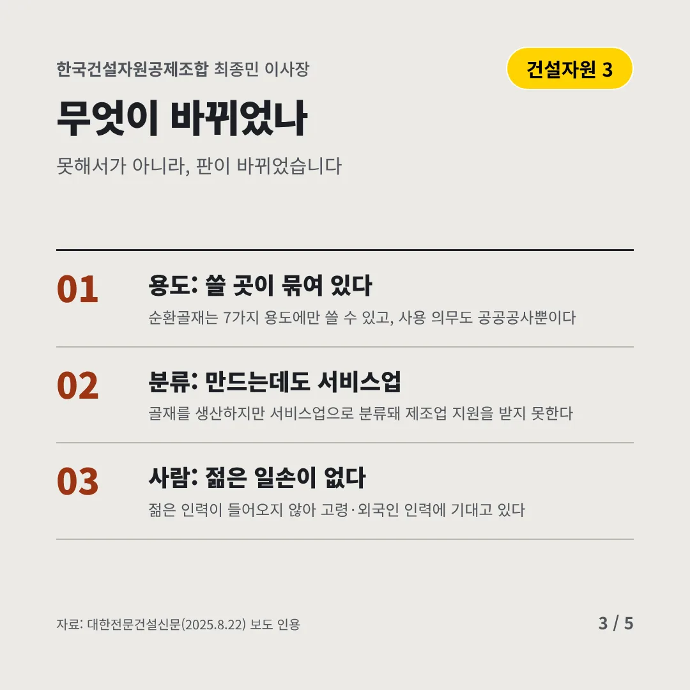
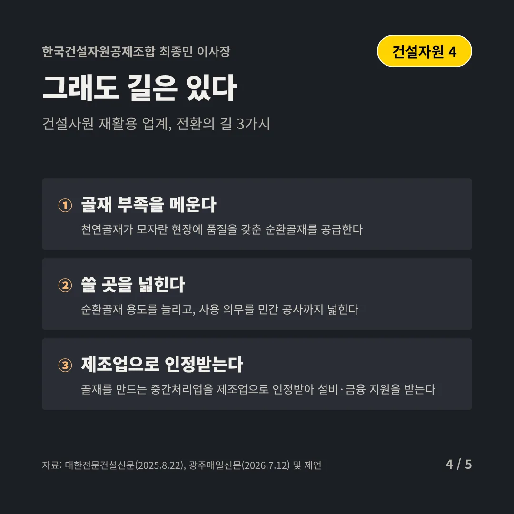
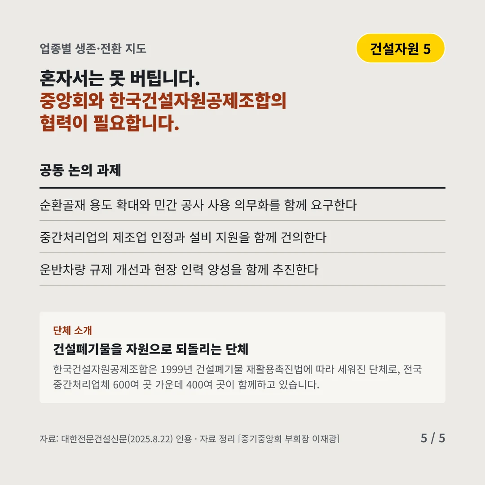
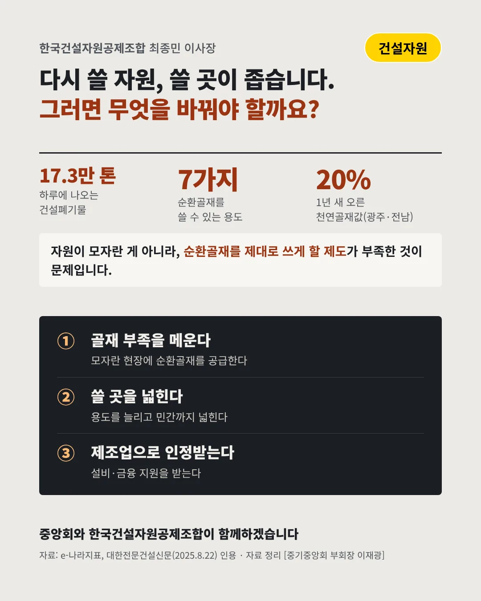

한국건설자원공제조합
버려지는 게 아니라, 다시 쓰일 자원이다
17.3만 톤 하루에 나오는 건설폐기물(2024)






다시 쓸 자원인데, 쓸 곳이 좁습니다. 건설자원 업계는 어디로 가야 할까요?
숫자로 보는 현실
- 600여 곳전국 건설폐기물 중간처리업체이 가운데 400여 곳이 공제조합에 가입
- 7가지순환골재를 쓸 수 있는 용도도로 기층·복토 등으로 묶여 있다
- 20%1년 새 오른 천연골재값광주·전남, 모래·자갈이 모자란다(2026.7)
무엇이 바뀌었나
- 용도: 쓸 곳이 묶여 있다순환골재는 7가지 용도에만 쓸 수 있고, 사용 의무도 공공공사뿐이다
- 분류: 만드는데도 서비스업골재를 생산하지만 서비스업으로 분류돼 제조업 지원을 받지 못한다
- 사람: 젊은 일손이 없다젊은 인력이 들어오지 않아 고령·외국인 인력에 기대고 있다
그래도 길은 있다
- 골재 부족을 메운다천연골재가 모자란 현장에 품질을 갖춘 순환골재를 공급한다
- 쓸 곳을 넓힌다순환골재 용도를 늘리고, 사용 의무를 민간 공사까지 넓힌다
- 제조업으로 인정받는다골재를 만드는 중간처리업을 제조업으로 인정받아 설비·금융 지원을 받는다
한 장 요약

단체 소개
한국건설자원공제조합은 1999년 건설폐기물 재활용촉진법에 따라 세워진 단체로, 전국 중간처리업체 600여 곳 가운데 400여 곳이 함께하고 있습니다.
자료: e-나라지표 폐기물 발생, 처리현황, 대한전문건설신문(2025.8.22), 광주매일신문(2026.7.12)